Olá, eu sou o Lucas!
Desenvolvedor |
Desenvolvedor Full-Stack com habilidades em React, HTML, CSS, JavaScript, TypeScript, Node, Java e Python, atualmente me aprimorando no desenvolvimento Mobile, com React Native e Flutter.
Desenvolvedor |
Desenvolvedor Full-Stack com habilidades em React, HTML, CSS, JavaScript, TypeScript, Node, Java e Python, atualmente me aprimorando no desenvolvimento Mobile, com React Native e Flutter.

Lucas, 20 anos, desenvolvedor Full-Stack, matriculado no 6ºSemestre de Desenvolvimento de Software Multiplataforma na FATEC de São José dos Campos. Apaixonado por programação e com experiência em React, JavaScript, TypeScript, Node, Python e Java. Sempre buscando evoluir, ansioso para enfrentar desafios profissionais e trabalhar em equipes contribuindo para o avanço tecnológico.
O projeto se trata de uma central de ajuda de serviços relacionados a tecnologia. Nesse projeto foram utilizadas algumas das seguintes tecnologias: HTML, CSS, JavaScript, Python, Flask e MySQL.
Nesse projeto, o objetivo principal era desenvolver um Crawler que consiga buscar, ler e identificar o conteúdo relacionado aos Professores Associados ao nosso sistema num PDF, após achar algo relacionado, um email deveria ser enviado para o mesmo, o notificando do ocorrido. Nesse projeto foram utilizadas algumas das seguintes tecnologias: React, TypeScript, Node JS e MySQL.
Nesse projeto o objetivo foi criar um sistema de microsserviços que simplifica e automatiza o processo de cadastro de vendas de uma empresa, com controle de parcelas detalhado e geração de relatórios, otimizando assim o trabalho dos funcionários. Nesse projeto foram utilizadas algumas das seguintes tecnologias: React, TypeScript, Java e SpringBoot.
Nesse projeto o objetivo foi criar um serviço para coletar dados de uma estação meteorológica conectada a um Arduíno, que devia enviar dados para um banco não relacional e após um tratamento enviar em lotes para um banco relacional, além disso, um dashboard para o acompanhamento das estações também foi criada, com detalhes de eventos, gráficos, parâmetros e alerta das estações. Nesse projeto foram utilizadas algumas das seguintes tecnologias: React, TypeScript, C e MongoDB.
Nesse projeto o objetivo foi desenvolver uma aplicação mobile para o controle de campos e pragas de uma fazenda, basicamente a partir de uma imagem tirada de armadilhas de pragas nossa aplicação deveria quantificar as pragas com IA e exibir em um dashboard para o usuário final. Nesse projeto foram utilizadas algumas das seguintes tecnologias: React Native, Javascript, Nest JS, Firebase e MySQL.
Nesse projeto construímos um sistema de cadastro e controle de acessos em áreas restritas, armazenando dados do acesso e exibindo imagens de uma câmera do local para um porteiro da empresa. Também desenvolvemos um Chatbot para auxiliar a utilização do sistema. Nesse projeto foram usadas tecnologias como: React, NodeJS, MySql e Python.
 
